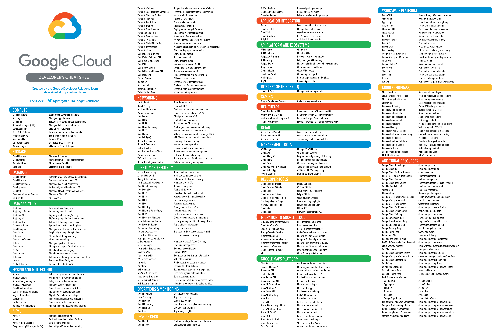
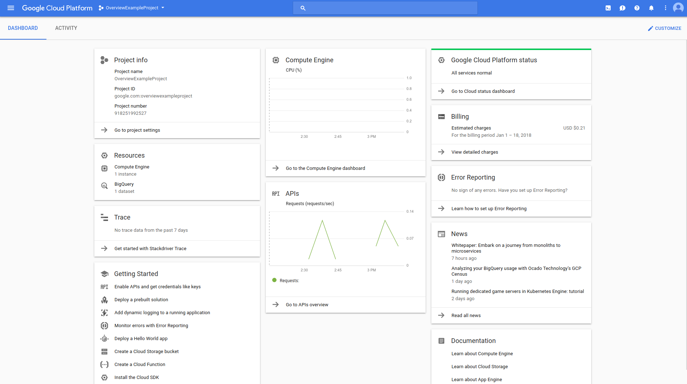

# Intro to the hands-on - A public cloud platform: Google Cloud Platform - A remote development environment : GitHub Codespaces <!--s--> ### Remote Development <!--v--> ### Why "remote development" ? AI / Data Science = Data + Compute + Software - Your job consist in handling huge volume of data - Your job requires high computational resources - You're working as a team with centralized computing platform - You're working remotely <!--v--> ### Key use case  <!-- .element: height="50%" width="50%" --> <!--v--> ### Key use case  <!-- .element: height="40%" width="40%" --> https://newsletter.pragmaticengineer.com/p/cloud-development-environments-why-now <!--v--> #### Your future daily routine  <!-- .element: height="40%" width="40%" --> Another example (more managed) [Google Colab](https://colab.research.google.com/) <!--v--> #### Your future daily routine An AI-centric example, https://lightning.ai/studios  <!-- .element: height="40%" width="40%" --> <!--v--> #### Your future daily routine  <!-- .element: height="40%" width="40%" --> [Uber Blog describing their way of working](https://www.uber.com/en-FR/blog/devpod-improving-developer-productivity-at-uber/) <!--v--> ### Problematics - How to transfer code ? - How to interact with the machines ? - How to get access to the data ? <!--v-->  <!-- .element: height="50%" width="50%" --> <!--v--> #### [Github Codespaces](https://docs.github.com/en/codespaces/overview) * [Github Codespaces](https://docs.github.com/en/codespaces) : A managed development environment by Microsoft Azure * A virtual machine and a [containerized development environment](https://docs.github.com/en/codespaces/setting-up-your-project-for-codespaces/adding-a-dev-container-configuration/introduction-to-dev-containers) * A lot of built-in bonuses including "in-browser" connection & TCP port forwarding with reverse proxy  <!-- .element: height="40%" width="40%" --> <!--s--> # Google Cloud Platform  <!-- .element: height="40%" width="40%" --> <!--v--> - One of the main cloud provider - Behind AWS in SaaS (serverless...) - More "readable" product line (for a Cloud Provider...) - Very good "virtual machine" management * per second billing * fine-grained resource allocation <!--v-->  <!-- .element: height="40%" width="40%" --> <!--v--> <p></p> [GCP Services in 4 words or less](https://googlecloudcheatsheet.withgoogle.com/) <!--v--> ### Concepts <!--v--> #### Zones and Regions  <!--v--> #### Projects  - Access (Enabling API/Services) - Ressources (Quota by project) - Networking - Billing <!--v--> #### Concepts: Identity and Access Management (IAM)  <!--v--> #### Main Products we are going to be looking at - Google Compute Engine (virtual machine solutions) - Google Cloud Storage (storage solutions) <!--v--> #### Google Compute Engine (GCE) - The VM solution for GCP - Images: Boot disks for VM instances example: `ubuntu-1804` - Machine Types: Ressources available to your instance example: `n1-standard-8` (8 vCPU, 30 Gb RAM) - Storage Options: "Attached disk" that can persist once the instance is destroyed... can be HDD, SDD... - Preemptible: "Spot instances" on AWS", cheap but can be killed any minute by GCP <!--v--> #### Google Cloud Storage (GCS) - Cheaper storage than persistent disks - Can be shared between multiple instances / zones - Higher latency than local disk - Data is stored in "buckets" **whose name are globally unique** <!--v--> #### GCS Storage Classes | Class | Use Case | Price | |-------|----------|-------| | Standard | Frequent access | ~$0.02/GB | | Nearline | Monthly access | ~$0.01/GB | | Coldline | Quarterly access | ~$0.004/GB | | Archive | Yearly access | ~$0.0012/GB | Choose based on access frequency! <!--v--> #### GCS with gsutil CLI ```bash # List buckets gsutil ls # Create bucket (name must be globally unique!) gsutil mb gs://my-unique-bucket-name # Upload file gsutil cp local_file.csv gs://bucket/path/ # Download file gsutil cp gs://bucket/path/file.csv ./ # Recursive copy (for folders) gsutil -m cp -r gs://bucket/data/ ./local_data/ ``` <!--v--> #### GCS Access from VMs VMs need **access scopes** to use GCS: ```bash # When creating VM, add storage scope gcloud compute instances create my-vm \ --scopes=storage-rw # read-write access to GCS ``` Or use a service account with appropriate IAM roles <!--v--> #### Interacting with GCP: The Console <p></p> <https://console.cloud.google.com> <!--v--> #### Interacting with GCP: SDK & Cloud Shell - Using the gcloud CLI: https://cloud.google.com/sdk/install - Using Google Cloud Shell: A small VM instance you can connect to with your browser (that we won't use)  <!--s--> ### Self-paced hands-on  <!--v--> #### Objectives - ✅ Discover GitHub Codespace - ✅ Create your GCP account, configure your credentials - Create your first VMs and connect to it via SSH - Learn to use Tmux for detachable SSH sessions - Interact with Google Cloud Storage - End to End example : - Write code in your codespace - Transfer it to your GCE instance - Run the code, it produces a model - Transfer the model weights to google cloud storage - Get it back from your codespace - Bonus content - Managed SQL - Infrastructure as code <!--v--> #### SSH Tunnel, Port Forwarding > In computer networking, **a port is a communication endpoint**. At the software level, within an operating system, a port is a logical construct that identifies a specific process or a type of network service. **A port is identified for each transport protocol and address combination** by a 16-bit unsigned number, known as the port number. The most common transport protocols that use port numbers are the Transmission Control Protocol (TCP) and the User Datagram Protocol (UDP). [Wikipedia](https://en.wikipedia.org/wiki/Port_(computer_networking)) <!--v--> #### Examples of protocols & usual ports Examples * SSH on port 22 * HTTP on port 80 * HTTPS on port 443 http apps can serve content over specific ports Example * Jupyter default is 8888 (that's why you open http://localhost:8888) <!--v--> #### SSH Tunnels We usually connect to web app using `http://{ip}:{port}` 😨 but what if the machine is not available from the public internet / local network ? ➡️ Enter SSH with port forwarding  <!-- .element: height="50%" width="50%" --> [Visual guide](https://iximiuz.com/en/posts/ssh-tunnels/) <!--v--> #### Tunnels of tunnels * Some of you did Local Machine -> (browser) -> Codespace -> (ssh) -> VM -> Jupyterlab on port 8888 * With port transfers ! * What happens when you go to `http://(url-generated-by-codespaces):8888` in this case ?